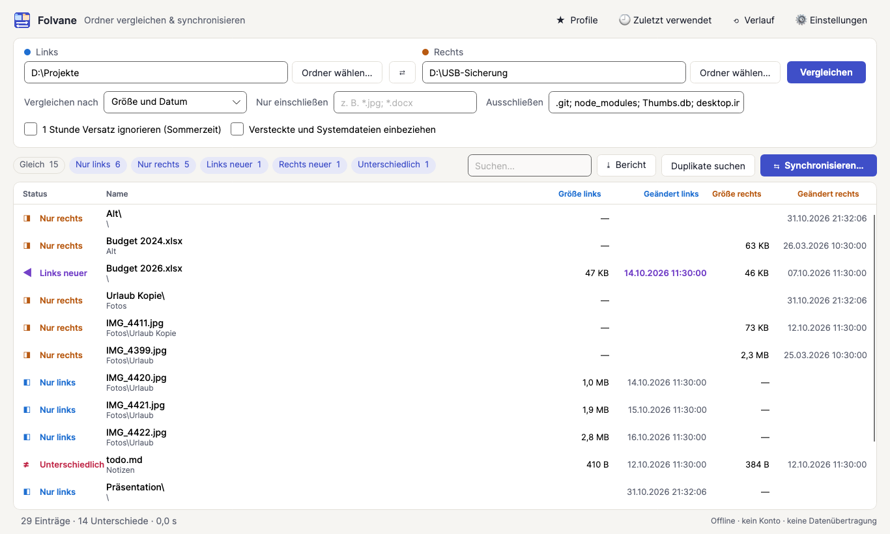
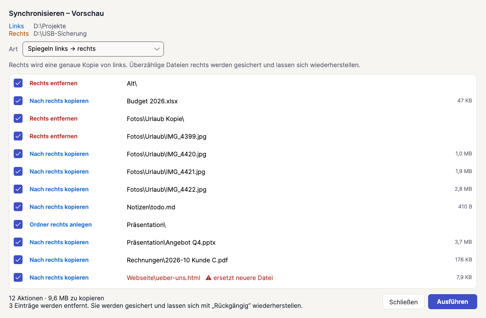
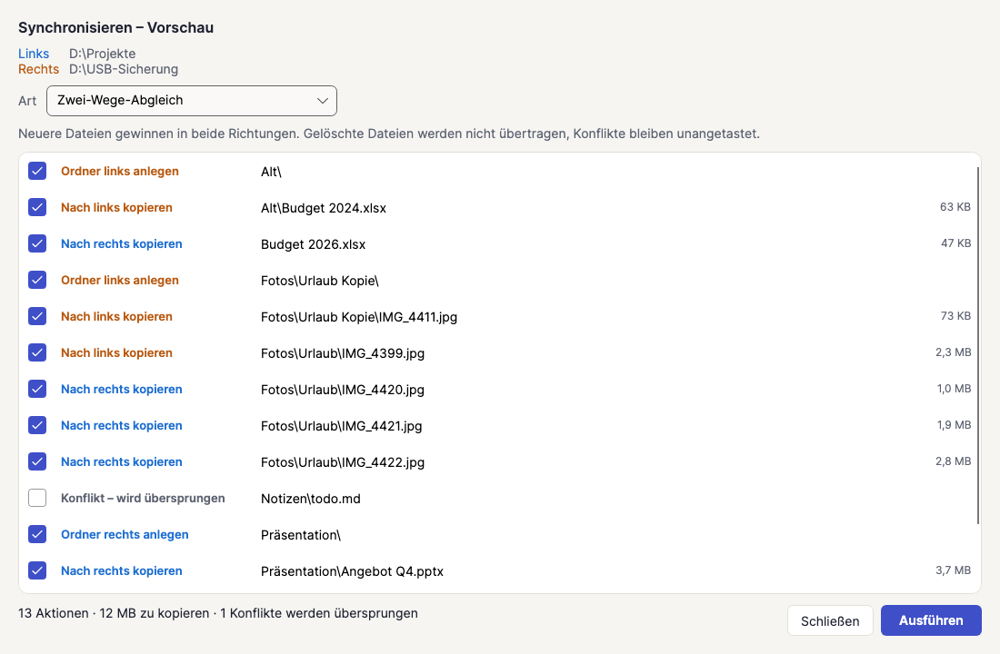
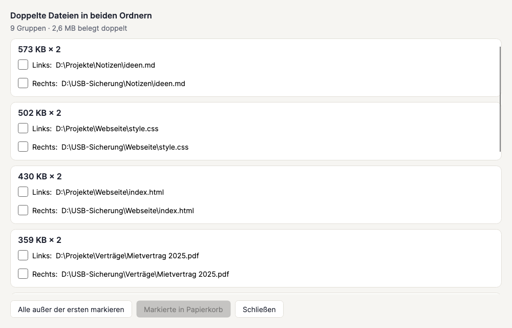
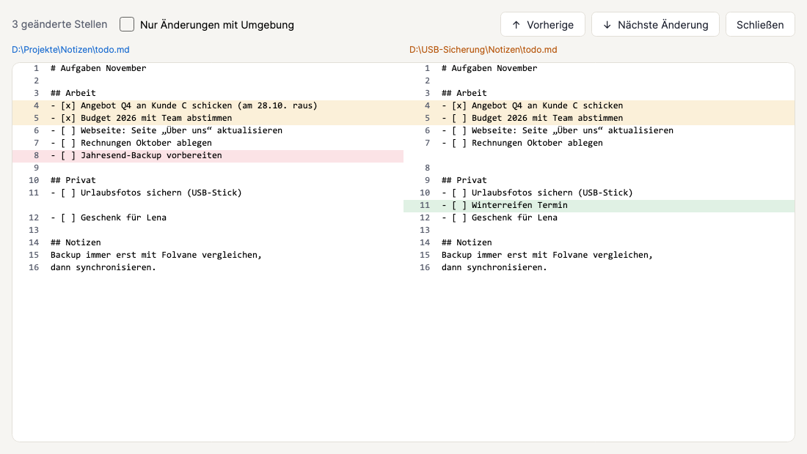

Zwei Ordner. Ein Blick.
Folvane zeigt dir, welche Dateien fehlen, neuer oder anders sind – und gleicht deine Ordner auf Wunsch ab: mit Vorschau, Sicherungen und Rückgängig mit einem Klick. Alles bleibt auf deinem PC.

Windows 10 (1809+) und 11 · x64 und ARM64 · Deutsch und Englisch · Einmalkauf, kein Abo

Alles, damit deine Ordner im Gleichschritt bleiben
Vergleichen
Jede Datei mit ihrem Zustand: gleich, nur links, nur rechts, links neuer, rechts neuer oder unterschiedlich. Nach Größe und Datum in Sekunden oder Byte für Byte. Farbige Filter und Sofortsuche.
Sync mit Vorschau
Spiegeln in beide Richtungen, rechts aktualisieren ohne etwas zu löschen oder Zwei-Wege-Abgleich, bei dem die neuere Datei gewinnt. Jede Aktion steht vorher in der Liste und lässt sich abwählen.
Rückgängig und Verlauf
Überschriebene und entfernte Dateien werden vorher gesichert. Den letzten Abgleich nimmst du mit einem Klick vollständig zurück. Jeder Lauf steht mit Protokoll im Verlauf.
Textvergleich
Doppelklick auf eine geänderte Textdatei zeigt beide Fassungen nebeneinander. Geänderte, neue und gelöschte Zeilen sind farbig markiert; F8 springt zur nächsten Änderung.
Profile
Ordnerpaar mit Filtern und Abgleich-Art speichern, z. B. „Fotos → USB-Stick“, und mit einem Klick erneut vergleichen.
Duplikate
Identische Dateien über beide Ordner am Inhalt statt am Namen finden und Kopien in den Papierkorb verschieben. Eine Datei bleibt immer erhalten.
Berichte
Ergebnis als PDF, HTML oder CSV speichern – für Kunden, Kollegen oder die eigene Ablage.
Kommandozeile
Aus Terminal oder Skript starten: folvane --profile "Fotos → USB-Stick" oder folvane <links> <rechts>.
Folvane in Aktion




Sicher by design
Ein Ordnerwerkzeug fasst deine echten Dateien an. Deshalb fragt Folvane zuerst und lässt sich zurücknehmen.
Erst Vorschau
Nichts wird kopiert oder entfernt, bevor du die Liste gesehen und bestätigt hast.
Sicherungen und Rückgängig
Überschriebene oder entfernte Dateien werden im versteckten Ordner .folvane-backup gesichert, sodass sich der letzte Abgleich zurücknehmen lässt.
Sicheres Kopieren
Kopien werden erst vollständig geschrieben, dann ersetzt, und behalten ihr Änderungsdatum.
Konflikte bleiben unangetastet
Wurden beide Seiten geändert, lässt der Zwei-Wege-Abgleich die Dateien in Ruhe, statt zu raten.
Papierkorb für Duplikate
Doppelte Kopien wandern in den Papierkorb, eine Datei bleibt immer erhalten.
Offline und privat
Kein Konto, keine Cloud, keine Werbung, keine Telemetrie. Protokolle bleiben auf deinem PC.
Der Vergleich zu kostenlosen Tools
Kostenlose Tools können eine gute Wahl sein. Das bringt Folvane mit, und es ist eine Checkliste, die sich für jedes Tool lohnt.
| Der Vergleich zu kostenlosen Tools | Folvane | Typische kostenlose Tools |
|---|---|---|
| Vorschau vor jedem Abgleich | Immer | Unterschiedlich |
| Letzten Abgleich mit einem Klick rückgängig | Ja, mit Verlauf und Protokoll | Oft nicht vorhanden |
| Textvergleich nebeneinander | Eingebaut | Teils ein separates Programm |
| Profile und Kommandozeile | Ja | Unterschiedlich |
| Duplikate finden | Eingebaut | Oft ein separates Programm |
| Berichte als PDF, HTML, CSV | Ja | Selten |
| Moderne Windows-11-Optik, hell und dunkel | Ja | Oft in die Jahre gekommen |
| Werbung oder Zusatzangebote | Keine | Unterschiedlich |
| Updates und Support über den Store | Ja | Unterschiedlich |
Einfacher Preis
9,99 €
Einmalkauf über den Microsoft Store. Kein Abo, kein Konto, keine Käufe in der App. Maßgeblich ist der im Store angezeigte Preis; er kann je nach Land und Steuern abweichen.

Systemanforderungen
- Windows 10 ab Version 1809 oder Windows 11
- x64- oder ARM64-PC
- Etwa 150 MB Speicherplatz
- Keine Internetverbindung zur Nutzung nötig
Anleitungen
Ordner vergleichen unter Windows
So siehst du, welche Dateien sich zwischen zwei Ordnern unterscheiden, und was Folvane anzeigt.
Backup prüfen
So prüfst du, ob ein Backup-Ordner vollständig und aktuell ist.
Synchronisieren ohne Löschen
Neue und geänderte Dateien kopieren, ohne etwas zu entfernen: mit robocopy oder Folvane.
Doppelte Dateien finden
Identische Dateien am Inhalt statt am Namen finden.
Ordner vergleichen ohne Zusatzsoftware
Explorer, robocopy und PowerShell und wo ihre Grenzen liegen.
Häufige Fragen
Funktioniert es mit USB-Sticks und Netzlaufwerken?
Ja, mit allem, was Windows als Ordner anzeigt. Für FAT/exFAT-Laufwerke und Speicherkarten gibt es eine Zeittoleranz und die Option „1 Stunde Versatz ignorieren“ für die Sommerzeit.
Erkennt der Zwei-Wege-Abgleich gelöschte Dateien?
Nein, mit Absicht. Ohne gespeicherten Vorzustand wäre das geraten. Nutze „Spiegeln“, wenn Löschungen übernommen werden sollen; das steht immer in der Vorschau und wird gesichert.
Kann ich einen Abgleich rückgängig machen?
Ja. Überschriebene und entfernte Dateien werden vorher gesichert, den letzten Abgleich nimmst du im Verlauf zurück.
Wie werden Dateien verglichen?
Nach Größe und Datum (schnell) oder Byte für Byte (sicher). Du kannst nur bestimmte Typen wie *.jpg; *.docx einschließen oder Muster wie node_modules; .git; *.tmp ausschließen.
Sendet Folvane Daten ins Internet?
Nein. Die App sendet keine Daten, hat kein Konto und keine Telemetrie. Siehe Datenschutz.
Gibt es ein Abo?
Nein, es ist ein Einmalkauf.